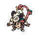
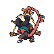

Gambalhote · overworld em ¾
Frente SW e costas NW em câmera elevada. Nariz de madeira, peito-pipa e cauda segurando a cruzeta preservados do concept aprovado.
Frente · SW
Costas · NW
80×80 por célula. Duas poses estáticas; os frames da fonte são vistas distintas, não animação. Pivô e escala no cenário ainda precisam de teste.
PNG frente · PNG costas · Aseprite editável · Produção